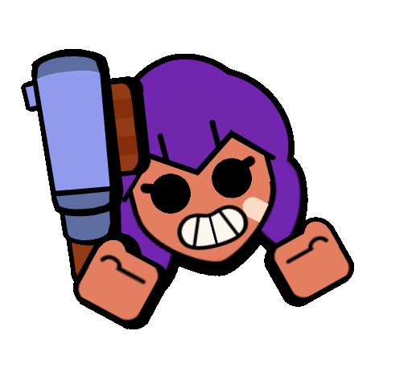
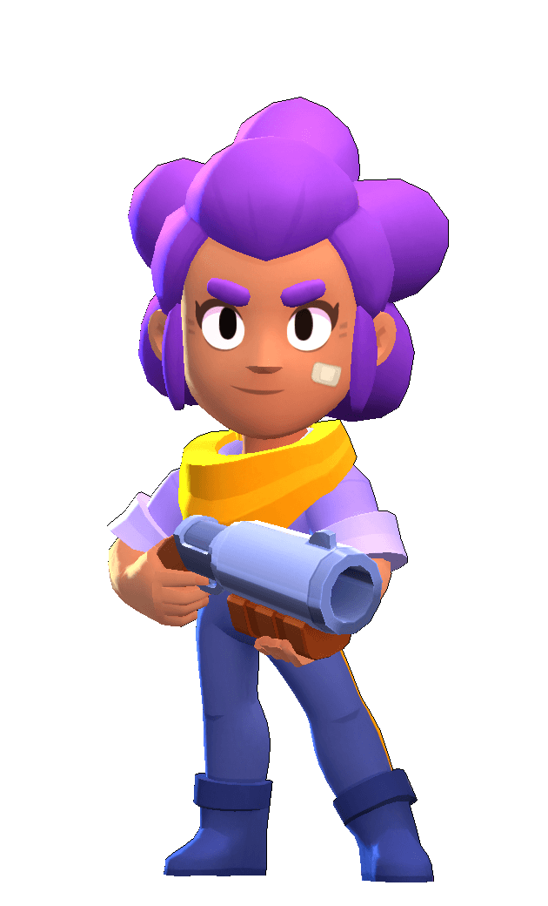

Quiz quem voce seria no Brawl Stars
Pergunta 1
Como você prefere agir em uma situação difícil??
Fico calmo e tento ajudar as pessoas ao meu redor com boas energias.
Encaro de frente e não tenho medo de lutar.
Prefiro manter distância e agir de forma estratégica, usando minha velocidade e inteligência.
Tento resolver rapidamente, com impulso e ação, sem pensar muito nas consequências.

Pergunta 2
Como você se sente em relação a grupos e equipes?
Prefiro ser o líder, o que é esperado de mim devido à minha força e coragem.
Eu adoro estar com os outros e sempre tento animá-los, criando boas vibrações.
Eu sou um tanto impulsivo e gosto de me destacar com minhas ações rápidas, às vezes agindo sem avisar.
Gosto de trabalhar de forma independente e, às vezes, me sinto mais confortável sozinho.
Pergunta 3
Quando você enfrenta um desafio, como prefere agir?
Vou para a ação imediatamente, às vezes sem pensar muito, mas confiando na minha habilidade de superar o que vier.
Gosto de planejar minhas ações de forma cuidadosa, para que minha abordagem seja a mais eficaz possível.
Tento encontrar uma maneira de ajudar todos, não importa a situação.
Eu sou direto e focado em derrotar os obstáculos pela minha força.
Pergunta 4
Se você pudesse escolher uma habilidade especial, qual delas seria mais atraente para você?
Ser rápido e invisível, para surpreender meus oponentes e me mover sem ser notado.
Ter um grande impulso de energia, permitindo-me dar saltos altos e chegar rapidamente aos lugares.
Ter força sobre-humana para derrotar todos os inimigos que aparecerem no meu caminho.
Curar e ajudar os outros, espalhando boas energias e melhorando o clima.
Pergunta 5
Em relação à sua personalidade, como você se descreve?
Confiante, sempre pronto para enfrentar qualquer desafio, com um grande coração e força.
Extrovertido, sempre tentando trazer boas vibrações e ajudar meus amigos.
Impulsivo, sempre pronto para agir sem hesitar, buscando a próxima grande aventura.
Misterioso, com uma personalidade mais reservada, mas uma habilidade única para superar obstáculos.
Pergunta 6
Como você lida com a pressão de uma batalha ou desafio?
Encaro de frente e mostro toda minha força, sem me importar com os riscos.
Mantenho a calma e tento manter o espírito positivo, tanto para mim quanto para os outros.
Prefiro pensar antes de agir, utilizando minha velocidade e habilidades estratégicas para
Eu ataco imediatamente, com muita energia e sem medo de arriscar.
Pergunta 7
Pergunta 8
Pergunta 9
Pergunta 10
Resultado
RESULTADO